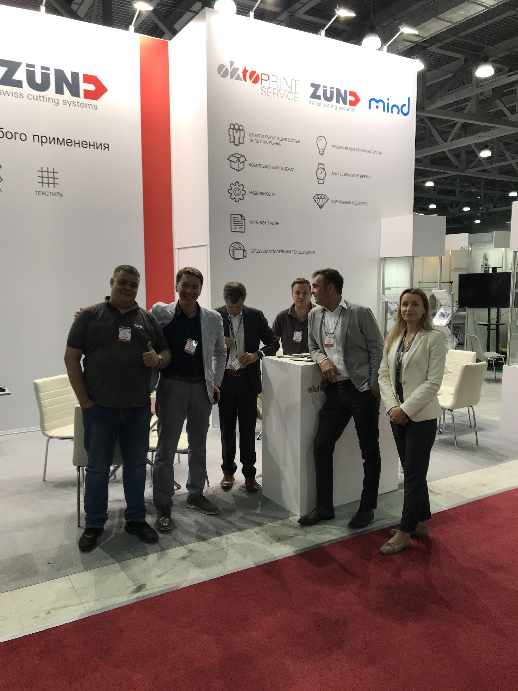
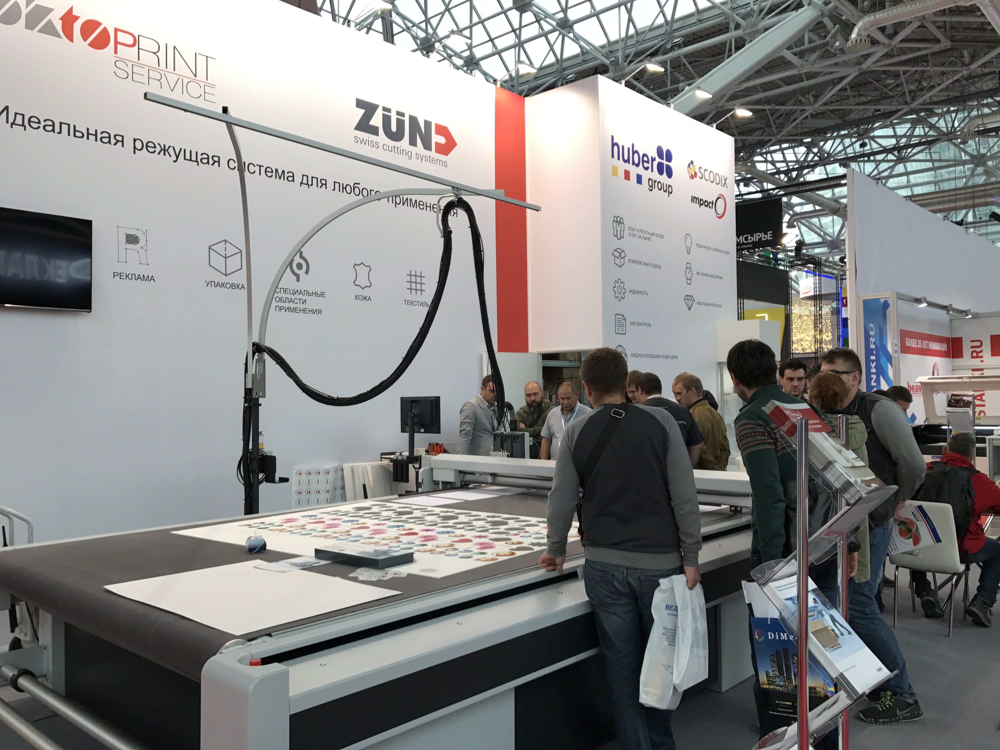
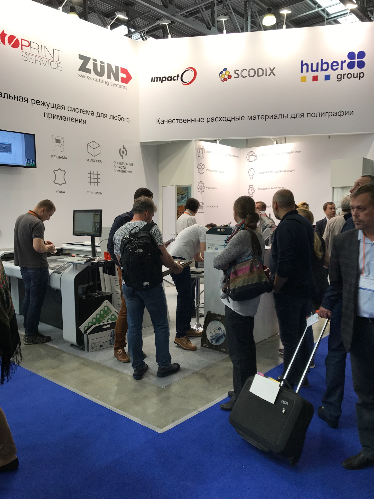
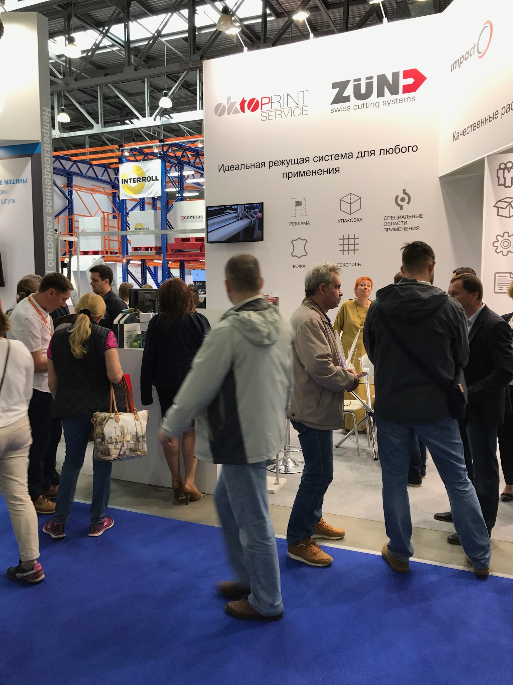

ЗАДАЧА 01
Повысить узнаваемость
Показать новым сегментам, что оборудование применимо не только к привычным материалам, но и к раскрою ткани, кожи и другим задачам.
Как превратить выставку в работающий B2B-маршрут: от выхода в новую отрасль и партнёрской демонстрации технологии до сбора контактов и приглашения на тестирование.
Когда компания выходила на выставки текстильной и кожевенной отраслей, бренд Zünd был мало знаком многим производителям этих сегментов. Я предложила концепцию «живого производства» и выстроила вокруг неё весь выставочный маркетинг: от идеи и партнёрств до привлечения аудитории, регистрации контактов в CRM и дальнейшей коммуникации.
С 20–30 до 100–150 зарегистрированных контактов за выставку.




Оборудование Zünd было знакомо рынку прежде всего по работе с картоном и композитными материалами. Нужно было показать его возможности производителям текстиля и изделий из кожи - и сделать это не только через рекламные сообщения, но и на реальных производственных задачах.
Показать новым сегментам, что оборудование применимо не только к привычным материалам, но и к раскрою ткани, кожи и другим задачам.
Объединить усилия с партнёрами, которые уже работали с производителями и были для них знакомыми поставщиками.
Не ограничиваться посещением стенда: собрать контакты, продолжить коммуникацию и предложить тестирование на материалах.
На выставке в Германии я увидела, как роботы перевозили детали между стендами разных участников. Это наблюдение подсказало мне идею: вместо отдельных демонстраций объединить участников в единый производственный процесс и показать посетителям путь от материала до готового изделия.
Я адаптировала этот принцип под задачи компании. Оборудование Zünd становилось частью понятного производственного сценария, а партнёры помогали показать следующие этапы работы.
Ткань, кожа, картон и другие материалы партнёров.
Демонстрация работы оборудования Zünd вживую.
Передача деталей партнёрам для дальнейшей обработки или пошива.
Практический результат вместо абстрактного рассказа.
Обсуждение задач посетителя и возможностей применения.
«Я хотела, чтобы посетитель увидел не просто станок, а новую возможность для собственного производства - от исходного материала до готового продукта».
От идеи и визуальной концепции до переговоров, организации стенда, рекламных материалов и последующей работы с контактами. Важной частью проекта было внимание к деталям и поиск решений, которые позволяли экономно использовать бюджет.
Продумывала идею стенда, расположение оборудования, последовательность демонстраций, рекламные материалы.
Лично договаривалась с партнёрами, поставщиками материалов и организаторами выставок; координировала договорённости.
Собирала референсы, отрисовывала идеи в CorelDRAW, затем с инженерами прорабатывала конструкцию изделий.
Договаривалась о бесплатном предоставлении материалов партнёрами для изготовления сувениров.
Готовила тексты, приглашения и рассылки клиентам через Mailchimp, SendPulse и Bitrix24.
Публиковала процессы подготовки в соцсетях, участвовала в конференциях партнёров, приглашала на стенд.
Я искала референсы и придумывала изделия, которые можно было изготовить на оборудовании и подарить посетителям. Каждый предмет показывал точность обработки или работу с конкретным материалом.
Овечки, мышки и другие небольшие изделия, в том числе к новогодним выставкам.
Подставки, табуретки, лабиринты для шарика и другие предметы, с которыми посетитель мог взаимодействовать.
Раскрой и сборка коробочек прямо на выставке - от плоской заготовки до готовой упаковки.
Бабочки и дельфины из пенокартона Dispa и Kapa, демонстрирующие работу с листовыми материалами.
Подставки и другие изделия, требовавшие точной обработки фрезой.
Материалы предоставляли партнёры; часть заготовок печатали у партнёров или клиентов, затем раскраивали на Zünd.
Я выстраивала последовательность контактов до мероприятия, во время него и после - чтобы заинтересованный посетитель мог перейти от знакомства к проверке возможностей на своих материалах.
Создать повод прийти на стенд.
Заинтересовать и познакомить с продуктом.
Продолжить диалог и предложить шаг.
После выставки я приглашала потенциальных клиентов на производство Cut4You с собственными материалами - чтобы они могли бесплатно протестировать резку и оценить результат на своей задаче.
Я исходила из того, что у партнёров уже есть доверие и рабочие отношения с производителями нужных нам отраслей. Поэтому лично вела переговоры и договаривалась о совместных сценариях, материалах и коммуникациях.
Партнёры предоставляли материалы для сувениров и демонстрационных изделий. Совместные продукты брендировались, а описание процесса размещалось на сайтах партнёров. Мы также показывали процесс на профильных мероприятиях.
В предыдущем формате обычно собирали 20–30 анкет. Контакты регистрировались в Bitrix24 с указанием названия выставки.
Концепция применялась на выставках «ОБУВЬ. МИР КОЖИ», «Интерткань» и «ТЕКСТИЛЬЛЕГПРОМ» по два раза в год.
Среди примеров - приобретение плоттеров компанией «Все майки» и покупка Zünd S3 производителем из Кировской области.
Подход я также адаптировала для выставок «Реклама» и «Русупак». Параллельно развивала клиентские истории: публиковала материалы о предприятиях в изданиях Publish и «Мир гофрокартона», создала на сайте раздел «Истории успеха».
Я самостоятельно придумала концепцию «живого производства» и отвечала за выставочный маркетинг в целом: стратегию привлечения новой аудитории, оформление и содержание стенда, переговоры с партнёрами, разработку изделий совместно с инженерами, приглашения и рассылки, публикации в социальных сетях, сбор контактов и последующую коммуникацию.
Я координировала участников процесса, внимательно контролировала детали и искала способы экономно использовать бюджет. Моя задача заключалась в том, чтобы каждый элемент – от расположения оборудования до подарка посетителю и письма после выставки – работал на общую цель: показать ценность технологии и создать возможность для дальнейшего контакта.
Развитие новых рынков, партнёрский маркетинг, Event-маркетинг.
Контент и соцсети, Email-маркетинг, приглашения.
Bitrix24 / CRM, управление бюджетом, координация команды и партнёров.